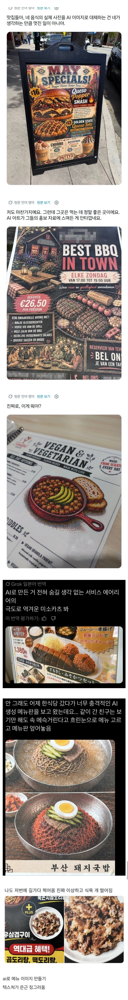

전세계적인 추세인거 같다는 거.jpg
댓글
스마트폰 카메라로 음식찍고 필터씌우는게 100배 나아보임.. 너무 역겹잖아;
AI 잘쓰면 잘뽑아주는데 저건 검수를 아예 안한거지
이런거 보면 아직까진 ai는 격차를 벌려주는쪽에 가깝지 격차를 줄여주는 쪽이 아닌듯. 별로 똑똑하지 않은 사람들이 기본적인 공부도 없이 ‘AI 좋다더라~’ 정도로 무료버전 GPT나 구글에 ai 무료 이미지 생성같은 검색어로 프롬프트도 없이 결과를 뽑아내고 그 결과에서 뭐가 어색한지 검수할 안목도 없으니 저런 결과물이 나오는거지. 근데 그런 경우가 본문 사례처럼 생각보다 많더라고?
결국 지금은 AI의 부족한 점을 검수할 능력이 되는 사람과 안되는 사람 사이의 격차가 엄청 크게 벌어지는것 같음
이게 그 불쾌한 골짜기냐?
그냥 존나 볼쾌한거지 뭔 골짜기야
그냥 밥먹을때 하나만들고 사진찍어라
메뉴판 만드는게 생각보다 단가 있지않나
너무 징그럽다 진짜
입맛 뚝 떨어지네
다이어트 하긴 좋겠어
저런거 만들고 걸때까지 보면서 이상한거 못느끼나
냉면은 공포증 올라오겠다
저거 여러번 수정하면 저렇게 된다더라
Ai slop
무료 이미지 생성기인 Bing으로 만들어서 더 그렇다는..
어제 동네 카페 갔는데 ai 이미지 버터떡은 똥처럼 생겼고, 수박쥬스의 수박은 여드름피부고 개판났던데 ㅋㅋ
일머리 없어서 수저 존나 늦게주는 장사 진짜 못하는 틀딱가게 가면 가끔 저렇더라
평균 지능을 안다면 세상에는 대충 사는 인간이 꽤 많다는걸 이해할 수 있지
최소한 돈 쓰고 챗지피티 돌려라
막짤은 도래창 실사 아님 ㅋㅋ?
메뉴판만 AI한테 맡기던가 음식 사진만 맡기던가 해서 둘이 합치면 무료여도 나쁘지 않은데, 이런이런 메뉴 이런이런 가격 들어간 메뉴판 만들어줘~ 하고 한번에 요청한다음 뭐 글자 틀린거 고치고 숫자 고치고 하다보면 저렇게 기괴해짐
생성형ai가 다 그렇지 뭐. 저지능 무능력자들을 위한 알량한 도구에 불과함 쓰는새끼들은 지들이 왜 걸러지는줄 모를거임
우웩
실물이랑 못따라가서 진짜 기괴한데다 정보전달도 불가능함ㅋㅋㅋ
일반적인 음식과 다르게 각이 져있어 징그러운가?
ai는 질감이랑 형태를 균일한 모양대로 틀에 짜듯이 뽑는걸 선호하는걸로 보이는데
고기의 울퉁불퉁한 형태나 면,소스의 형태까지도 다 균일한 데칼마냥 뽑으니깐 오히려 기괴하고 징그러워짐
음식보다는 벌집이나 내장같아보임
텍스쳐를 떠나서 ai로 만든거 비슷비슷한 느낌 많다보니 독특함이 없어서 눈이 잘 안가더라구
그래서 난 내가 원하는 구조를 잡아놓고, 거기에 들어갈 그림이나 배경 등을 ai돌려서 뽑아 배치하는편.
그럼 확실히 요즘 다 똑같은 분위기의 저런 양산형같은 느낌은 안나오니까.
덕분에 손님한테서 최대한 이득만 취하겠다는
장사치새기들 쉽게 거르고 찐 맛집 찾기 좋음
웹페이지형태(HTML)로 만들어달라하고 사진만 직접찍어 붙혀라...아오...
적어도 실물이랑 섞는 정성이라도 보이던지
진짜 좀 속 울렁거리는 음식이미지 꽤 있더라
개좆같네 진짜
이것도 뭐 윌스미스 스파게티영상처럼 한 2년지나면 실사화될거임
회사에서 의사결정해주는 직급의 사람들이 상당히 중요하다는걸 알 수 있음. 실무자로서 좆같긴 한데 입안자/실행자가 같으면 중간에 '새끼!! 기합!!'하는 사람도 있어야 하긴해 ㅋㅋㅋ
지피티한테 만들라고 하니까 잘 만들던데
50대 아재들이 운영하는 간판이나 광고전단지.만드는곳에.의뢰했나 ㅋㅋ
실물로 대충 찍고 스튜디오 사진처럼 바꿔달라고만 해도 퀄리티 높아지는데....
ai 이미지 생성이 쓰는 사람 역량에 따라 결과물 퀄 의외로 꽤 갈림
저거도 벌써 옛일이고
지금은 최신모델로 적당히 잘만 해도 구분 불가능함
저거 내추측엔 그냥 별 생각없는 업주는 업체한테 맡기고 업체는 ai로 대충해서 넘기고 하면서 일어나는 일일 듯 함
볼때마다 병신같다는 생각밖에 안듬
AI티나는 음식사진 보고 먹고싶은생각이 들겠냐
나도 아까 길가다가 붕어빵가게에 ai광고 붙여놓은거 봤는데
붕어 안에 팥을 동그랗고 윤기나게 그려놔가지고 무슨 알이나 내장같아서 징그럽더라 색깔도 팥색이라 똥같기도하고
환공포증 생김;;
우웩..
그냥 스마트폰으로 위에서 라이트 키고 아이폰으로 찍어. 그게 백 배 낫것다.
밈같은거 아님?
저런거 예시사진만줘도 전혀 안징그럽던데
아예쓸줄을 모르나벼
걍 저런거 양식만 만들라고하고 그위에 음식사진 올려놓으면 되는데
좋은 사진 냅두고 왜 ai로 이미지 넣는거야